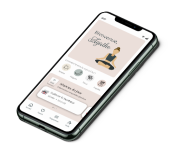

Inspirée par
la nature,
mes proches,
la mer,
mes lectures,
la curiosité est mon plus beau défaut
Pour un design joyeux & coloré au service de l’utilisateur
Partons à l'aventureBienvenue !
Je suis Mathilde, votre future designer UX / UI.
Après avoir
épluché le code civil
pendant 6
ans, j’ai pris le chemin de l’autoentreprenariat où 4 années durant j’ai soutenu les
écrivains
en
herbe
dans l’écriture et la correction de leurs romans. L’envie d’explorer mon côté créatif et de
me
challenger m’a conduit à la conquête du webdesign (et de votre cœur ♥).

Mes réalisations

UI design
Refonte de l'application Center Parcs
UI design
Refonte de l'application Center Parcs
UI design
Refonte de l'application Center Parcs